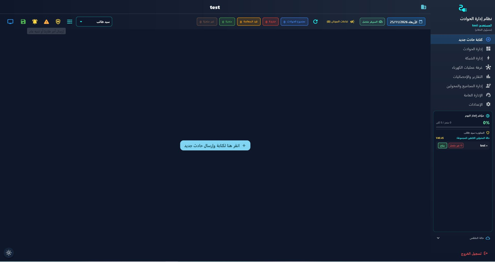

كل قسم في النظام،
مشروح خطوة بخطوة.
تعرف على إنشاء الحوادث وبطاقاتها، الاستلام والإنجاز، المحطات والمغذيات والمحولات، صلاحيات المجاميع والمخولين، الخرائط والتقارير. الشرح مفصل ومقسم إلى صفحات مستقلة سهلة البحث والرجوع إليها.
اختر القسم الذي تحتاجه
ابحث باسم القسم أو العملية، مثل «محولة» أو «استلام» أو «مخول».
التعريف بالنظام والبدء
كيف ترتبط نسخة Windows بتطبيق Android وقاعدة البيانات؟
واجهة Windows واللوحة الرئيسية
القائمة الجانبية، اختيار المجموعات، الملخصات وأزرار التشغيل
إضافة حادث وإدارة بطاقة الحادث
من البلاغ الجديد إلى التكليف والإنجاز والأرشفة
تطبيق الميدان: استلام الحادث وإنهاؤه
دليل المخول خطوة بخطوة على Android
المحطات والمغذيات والمحولات
إنشاء شجرة الشبكة، البحث، بيانات المحولة والاستيراد
إدارة المجاميع والمخولين
إنشاء المجموعات، إضافة الأشخاص، توزيع العمل وحالاتهم
المساحون والمشاهدون ومراقبو الشكاوى
الفروق بين الأدوار وما الذي يظهر لكل مستخدم
غرفة عمليات الكهرباء والخرائط
مراقبة الأصول والحوادث على الخريطة ومراجعة جودة المواقع
التقارير والإحصائيات
قراءة سجل الحوادث، التصفية والتصدير إلى PDF
الحاسبات الإضافية والصلاحيات
ربط الحاسبة بالمركز ومنح الصلاحيات وتعطيلها
التثبيت والتحديث والحفاظ على التفعيل
تحميل الإصدارات الرسمية وتحديث Windows وAndroid
الإشعارات والنداءات وحالة الاتصال
متى تظهر الإشعارات وماذا يعني «متصل / غير معروف»؟
الأسئلة الشائعة وحلول المشكلات
تشخيص الدخول، المجاميع، الخرائط، التحديث وحضور المخولين
السلامة المهنية وحماية المعلومات
العمل قرب الكهرباء، استخدام الخرائط وحماية بيانات المركز
إدارة القطاعات ومكتبة أصول الشبكة
تخصيص هوية المركز وأنواع الأعمدة والمنشآت والرموز.
رسم المغذيات والأعمدة والمنشآت
رسم المسارات والتفرعات والأعمدة المشتركة وربط المحولات.
عرض شبكة المغذيات والطبقات
عرض الجميع أو محطة أو مغذٍ، وإظهار معلومات الأصول.
الرسم الميداني وصلاحيات المساح
رسم مباشر باللمس، GPS، اختيار الأعمدة المشتركة والمراجعة.
حفظ الشبكة والتصدير والاستيراد والتقارير
نسخ JSON، ملفات Excel وKML وGeoJSON، والتقارير.
مشاركة الشبكة والمحاكاة والمخطط SLD
مشاركة للقراءة ومحاكاة اتصال منطقية مستقلة عن التشغيل الحقيقي.
ماكو قسم يطابق هذه الكلمة. جرّب كلمة أقصر أو اسم العملية.
أمثلة على واجهات Windows وAndroid
وضعت رسومات توضيحية مبنية على عناصر الواجهات، مع لقطات حقيقية متاحة من Windows. حتى يصبح الدليل مطابقاً لكل نافذة وبطاقة حادث، نحتاج صوراً أصلية للشاشات دون كلمات مرور أو بيانات شخصية.
مشاهدة أمثلة بطاقات الحوادث
أسماء الأزرار والخطوات مستمدة من ملفات مشروع ELECTRIC SYSTEM التي تمت مراجعتها. بعض الميزات مرتبطة بالصلاحيات أو بنسخة لم تنشر بعد، خاصة حضور المخولين والتحقق من GPS. الرسومات المصممة داخل الصفحات للتوضيح، وليست لقطات تشغيل حقيقية. لا تعرض صور التفعيل أو بطاقات الحسابات الحقيقية على موقع عام.